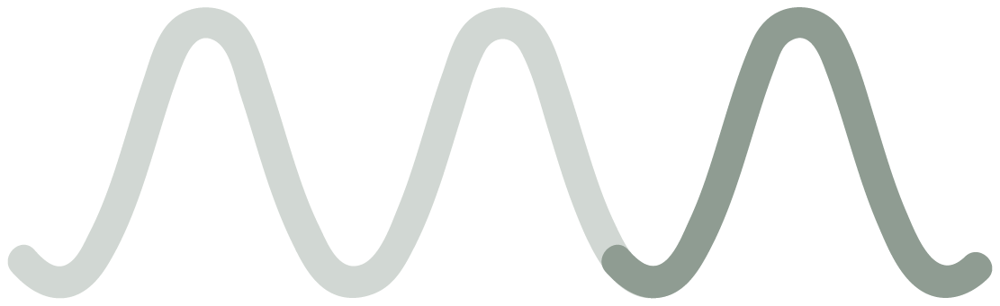
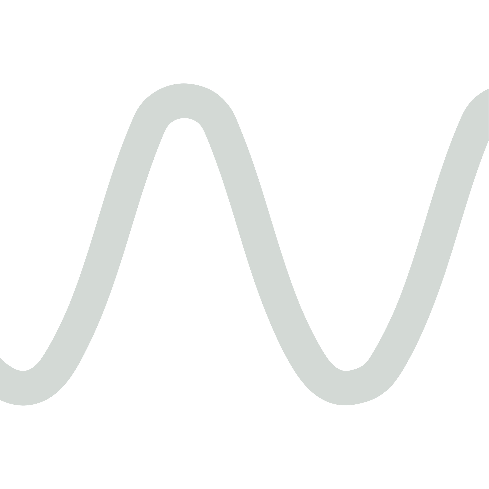
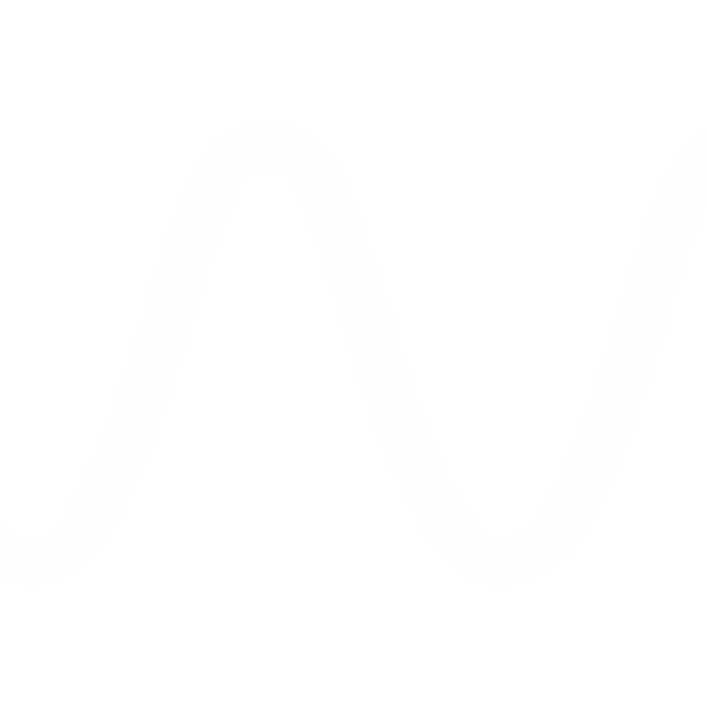

Dear PMDD,
One word a day, and after a couple of cycles, the thing you’ve been trying to explain starts to become a pattern you can see.

“Symptoms can vary from month to month, although they tend to form a pattern over time.”Royal College of Obstetricians and Gynaecologists

You spend years being told it's just stress, just hormones, just you. A pattern on paper is a very hard thing to talk you out of.
Most people who suspect PMDD find it hard to describe their months from memory. This spreadsheet keeps the record for you. Log one word a day and the Dashboard lays out where your low days fall in your cycle — and whether they keep landing in the same place.
Open the Setup tab. Enter your cycle start date, average cycle length, and period length. The tracker auto-generates 12 months of dates and phase windows.
Pick from a dropdown:
Good, Okay or Low.
No sliders, no symptom checklists, no decision fatigue. Five seconds at most.
After two cycles, the Dashboard shows how many of your low days fall in the late luteal phase and how consistent that is month to month — summarised on one page you can take to an appointment.
Five sheets. Each one does one job. No bloat, no in-app purchases, no tracking. Just the spreadsheet and the formulas that turn your daily notes into one page you can look at — and take with you.
Three numbers: cycle start date, average length, and period length. Everything else recalculates from these.
12 months of cycle days laid out in a single grid. Pick Good, Okay, or Low from the dropdown. Phases auto-color so you always know where you are.
Your tracked cycles side by side. Shows where low days sit — late luteal versus follicular — and how consistently the pattern repeats.
Twelve common questions: what the colors mean, how to read the Dashboard, how it compares to Flo / Clue, what to do if your cycles are irregular.
A scripted guide for the conversation: what to say, key phrases, what to expect, and what to do if you feel dismissed.
Because a spreadsheet does the one thing a cycle app can't: it hands someone a single, scannable page they can read in 30 seconds. No screenshots, no exports, no logins.
Not on a server. Not sold to advertisers. Not used to train a model. The file is yours: open it, close it, back it up, delete it. There is no account.
One page, printed or on screen, is simple to talk through together. A scroll of screenshots from a phone app is much harder to make sense of in ten minutes.
Your notes are laid out against your own cycle, so you can see where the harder days fall and whether they tend to land in the same part of the month.
Keep using Flo, Natural Cycles, Clue or Lively for period prediction. Use Dear PMDD for the one thing they don't do: laying your low days out against your cycle.

One file, .xlsx format, opens in Microsoft Excel, Apple Numbers, and Google Sheets. Designed for desktop; the formulas don't translate well to mobile spreadsheet apps.
One-time purchase. Instant digital download.
Dear PMDD is a symptom-tracking tool, not a diagnostic tool or a substitute for medical advice. It's designed to help you record what you're experiencing, spot patterns and have more informed conversations with your healthcare professional.
The full FAQ lives inside the spreadsheet itself. These are the ones people ask before they download.
No — and it isn't trying to. Dear PMDD is a place to record how you're feeling and see it laid out across your cycle. Nothing in the file interprets your symptoms or says what's causing them; only a healthcare professional can do that. What it can do is give you something concrete to bring to that conversation.
Anything you record is worth having, but patterns usually only become visible across two or three cycles — and the longer you track, the clearer the picture. The spreadsheet holds up to twelve cycles, and healthcare professionals often ask for a few months of daily notes.
Yes. The formulas use only standard spreadsheet functions, and the file has been tested in Excel (Mac & Windows), Numbers, Google Sheets, and LibreOffice Calc. Some colour formatting renders slightly differently between apps, but everything works the same way.
Mobile spreadsheet apps don't handle the colour formatting and dropdowns reliably enough for daily logging. A companion mobile version may follow, but for now the spreadsheet is the tool — and it's what gives you the one-page summary to take along.
£9.99, once. No subscription, no upsell, no adverts — and nothing to cancel later. You buy the file, it's yours, and any updates to it come to you at no extra cost.
It happens, and it isn't your fault. The Your Appointment sheet has gentle wording for asking that your concerns be recorded, for asking about a referral, and for requesting a second opinion — plus places to look for further support.